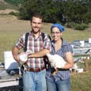
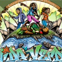

|
Contact Us
|
WELCOMEWelcome to the Early Bird Ranch website. Getting this site up and running has been one of our largest Winter projects and we are excited to finally have something to share. As the site grows and evolves, you will be able to see and read about every stage of our operation, stay updated on our production schedule, and read our blog. Thank you so much for your support.
A big thanks to our friend Kristen Calderwood who designed our logo and built the website you are enjoying. More of her work can be found at kristencalderwood.com |
|  |
(619) 855-9926
P.O. Box 29
Pescadero, CA, 94060
info@EarlyBirdRanch.com
See where we are!
|
|
Our Blog
|
| Back to Work ...The day-to-day schedule is quite fluid on the farm and it is hard to delineate between work and private time. However, the difference between our production season and the off-season is quite dramatic. Over the winter we’ve had time to recuperate, plan, and experiment...[read more] |
|
Our Neighbors
|
Vida Verde: Vida Verde is a nature education program that works with underserved students in the bay area.
www.vveducation.org |
 |
|